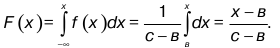

1. Биноминальный закон распределения. Этот закон математически выражается формулой разложения бинома (q + p)2 в следующем виде
где n! – читается как n-факториал,
Cnm – биноминальный коэффициент, выражающий количество сочетаний из n элементов по m, причем, n – положительное целое число.
2. Полиномиальный закон распределения (П/З/Р). В предыдущем случае рассмотрено два исхода появления случайного события А: или оно появится с вероятностью р, или не появится с вероятностью q = 1 – p.
Когда количество независимых испытаний равно n, то велика вероятность того, что каждое событие Viпроизойдет n раз, где i =1, 2,..., k. Причем
определяется формулой
В виде формулы (58) получен искомый полиномиальный полиноминальный закон распределения.
3. Равновероятное распределение. Рассматривая вышеприведенные законы распределения случайной величины, пришлось подчеркнуть различия в их проявлении при условиях: прерывно ли распределение случайных величин или непрерывно?
Другое название этого закона – равномерное, или прямоугольное распределение, несет в себе больше информации о кривой этого закона. Вероятность наступления случайного события А на рассматриваемом промежутке одинакова в любой точке из промежутка[в; с]. Для Р/Р плотность
где в, с – параметры З/Р/Р.
Функция распределения для З/Р/Р имеет вид:
